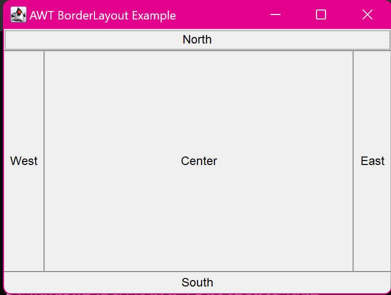

3. Create a simple AWT application that displays multiple buttons with BorderLayout manager (North, East, West, South, Center).
import java.awt.*;
import java.awt.event.*;
class main {
public static void main(String[] args) {
Frame frame = new Frame("AWT BorderLayout Example");
Button btnNorth = new Button("North");
Button btnSouth = new Button("South");
Button btnEast = new Button("East");
Button btnWest = new Button("West");
Button btnCenter = new Button("Center");
frame.setLayout(new BorderLayout());
frame.add(btnNorth, BorderLayout.NORTH);
frame.add(btnSouth, BorderLayout.SOUTH);
frame.add(btnEast, BorderLayout.EAST);
frame.add(btnWest, BorderLayout.WEST);
frame.add(btnCenter, BorderLayout.CENTER);
frame.setSize(400, 300);
frame.setVisible(true);
frame.addWindowListener(new WindowAdapter() {
public void windowClosing(WindowEvent we) {
System.exit(0);
}
});
}
}
